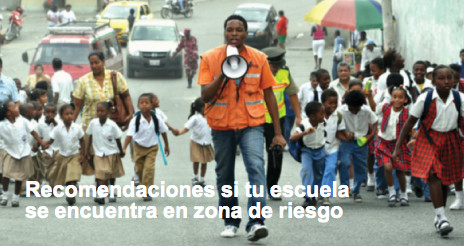

Identifica las zonas de seguridad donde debas ir con tu docente y compañeros para protegerse en caso de inundación o deslizamientos, y las rutas para llegar a ellas.
Identifica las zonas de seguridad donde debas ir con tu docente y compañeros para protegerse en caso de inundación o deslizamientos, y las rutas para llegar a ellas.|  |
Recomendaciones si tu escuela se encuentra en zona de riesgo
Identifica las zonas de seguridad donde debas ir con tu docente y compañeros para protegerse en caso de inundación o deslizamientos, y las rutas para llegar a ellas.
Realiza con tu docente y compañeros simulacros de evacuaciónn. Esta pránctica te permitirán conocer cuánnto tiempo demoras en llegar a la zona de seguridad y si la ruta de evacuaciónn escogida es las máns apropiada.
Si recibes una alerta de inundación o de deslizamiento, dirígete con tu docente y compañeros a la zona de seguridad identificada previamente, en orden y con calma.